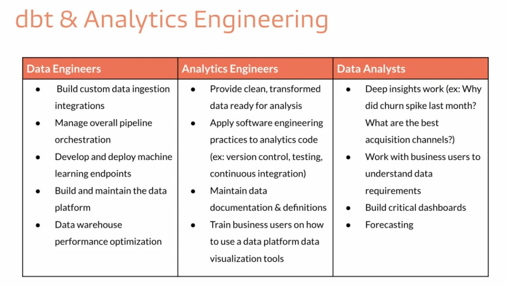

Before dbt and cloud warehouses, data teams typically split into just two roles. Today there’s a third role in the middle — and that’s the role you’re training for in this course.
| Role | Owns |
|---|---|
| Data engineer | The plumbing — ingestion, ETL pipelines, warehouse infrastructure, table creation. |
| Data analyst | Querying the warehouse to answer business questions, building dashboards. |
This split worked when transformations happened in code outside the warehouse and only finished tables landed inside. The data engineer wrote and maintained those pipelines; the analyst just queried the output.
Cloud warehouses + ELT + dbt blew up that split. Transformations now happen inside the warehouse as SQL, which means anyone fluent in SQL can build production data models. So a third role emerged.

| Role | Owns the … | Day-to-day |
|---|---|---|
| Data engineer | E and L | Get raw data into the warehouse: ingestion tools (Fivetran, Airbyte), custom connectors, streaming, infra, observability, cost management. |
| Analytics engineer | T | Turn raw warehouse data into clean, tested, documented marts using dbt. Owns the staging → intermediate → marts pipeline. Writes SQL, YAML, and tests. |
| Data analyst | The questions | Builds dashboards, runs ad-hoc analysis, partners with stakeholders. Consumes the marts the analytics engineer publishes. |
Once SQL becomes the transformation language, two problems show up:
The analytics engineer plugs that gap: they own the SQL transformations as engineering, with version control, testing, code review, CI, and documentation. dbt is the tool that makes this practical.
At a small company, one person often plays all three roles. As the team grows, the lines stay blurry — an analyst might write dbt models, a data engineer might build a dashboard. The roles describe responsibilities, not job titles.
This course is for someone who wants to own the T — the analytics engineer role, regardless of what your business card says. By the end you’ll be able to take raw tables in a warehouse, layer staging and marts on top, test them, document them, and ship them.
Press n when you’re ready for the next lesson.